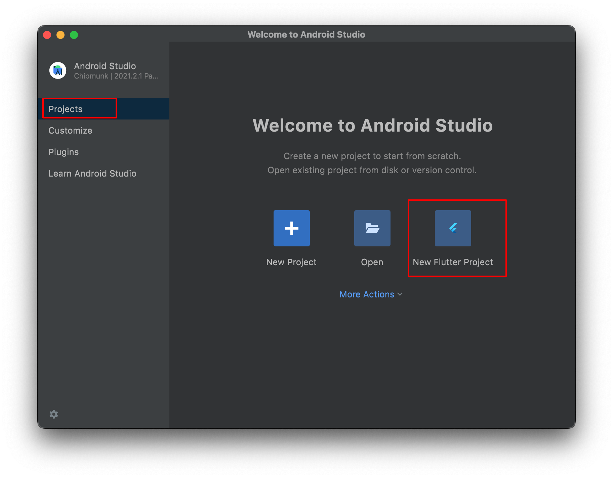
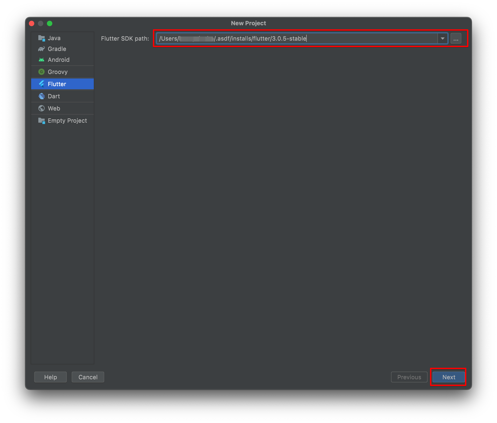
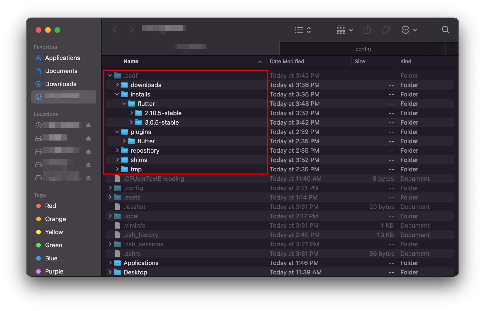
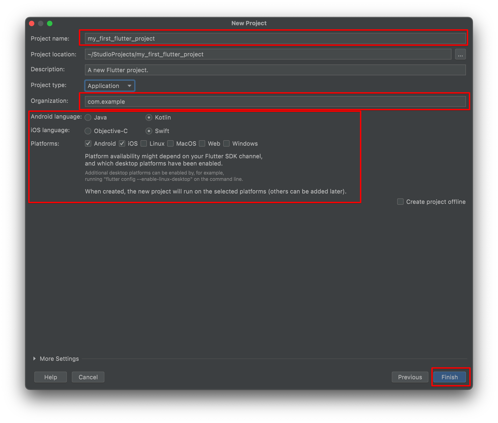
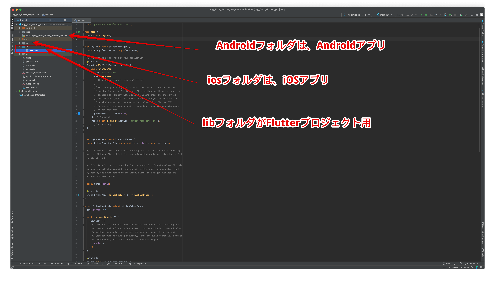

第11章
プロジェクトのスタート
Android Studioでスタートアッププロジェクトを作成します。
ウィザードに沿って作成するだけで、あっと言う間にモバイルアプリができあがります。
11.1 スタートアッププロジェクトを作る
Android Studioを起動します。Flutterプラグインをインストールしましたので、「New Flutter Project」を選択できるようになっています。

図11.1: Android Studio起動
「New Flutter Project」をクリックすると、「flutter SDK path」を入力、または選択します。

図11.2: Flutter SDK pathの指定
asdfを使用してFlutterをインストールした場合には、ユーザーホーム（/Users/ユーザー名/.asdf）以下のフォルダにあります。

図11.3: Flutter SDKのインストール場所
プロジェクトに関する情報を入力します。
- Project name: プロジェクトの名前（flutterは原則単語をアンダースコアでつなぐ）
- Project location: プロジェクト保存先
- Description: プロジェクトの詳細
- Project type: Application/Plugin/Package/Moduleの選択があります。
- Organization: Apple Developperに登録したIdentifire
- Android language: Android用に使用するプログラミング言語 Java/Kotlin
- iOS language: iOS用に使用するプログラミング言語 Objective-C/Swift
- Publication: 出力するプラットフォーム Android/iOS/Linux/MacOS/Web/Windows 以上の入力が完了しましたら、「Finish」ボタンをクリックします。

図11.4: desc
flutterコマンドが実行され、スタートアッププロジェクトが作成されます。後は、魔改造するだけです。

図11.5: desc
次に、作成されたプロジェクトをエミュレータで動かしてみましょう。